Oya é uma das melhores guerreiras anti-escudo de Hero Wars Alliance. Como heroina de Forca da Linha de Frente do Caminho da Natureza, ela pune inimigos protegidos com alto escalonamento de Ataque Fisico, sinergia com acerto critico e skills lendarias que tornam composições com escudo muito mais faceis de desmontar.
Neste guia, voce vai entender como funciona o kit base da Oya e suas skills lendarias, quando usar cada talisma, quais aliados aumentam sua pressao e como habilidades como Shieldbreaker, Predator Bite e Huntress Fury transformam a heroina em uma ameaca seria no PvP.
Guia da Oya - Hero Wars Alliance, um jogo desenvolvido pela Nexters.
Quem é Oya?
Oya e uma poderosa guerreira da Linha de Frente da faccao Caminho da Natureza. Seu kit gira em torno de alto escalonamento com Ataque Fisico, punicao contra escudos e sinergia com acerto critico, e suas skills lendarias elevam ainda mais sua capacidade de pressionar equipes que dependem de barreiras ou janelas defensivas.
Classe: Guerreira
Posição: Linha de Frente
Atributo Principal: Força
Facção: Natureza
Como obter Pedras da Alma: Eventos, Baú Heroico
Tier List Geral do Herói: A
Tier List da Hidra: B+
Sinergia: Yasmine, Chabba, Jhu, Ishmael, Guus
Oya funciona excepcionalmente bem com causadores de dano crítico como Yasmine, Jhu e Ishmael, formando equipes ofensivas de alta pressão. Sua sinergia com Guus melhora a sobrevivência e o controle, enquanto Chabba oferece suporte na linha de frente e distrai os inimigos, abrindo espaço para que os assassinos da retaguarda atuem livremente.
Graças à sua habilidade de ignorar escudos, Oya é especialmente eficaz contra formações defensivas e heróis protetores. Embora seja menos eficiente contra equipes focadas em magia, ela se destaca em composições físicas, especialmente em batalhas PvP onde quebrar escudos e ter uma forte presença na linha de frente faz grande diferença.
Prós e Contras da Oya – Hero Wars Alliance
✅ Prós
✔ Excelente heroina anti-escudo: Shieldbreaker pune alvos protegidos, e a melhoria lendaria espalha ainda mais pressao para todos os inimigos com escudo.
✔ Tem forte sinergia com aliados focados em critico como Guus, Yasmine, Jhu e Ishmael, melhorando dano explosivo e acionamento de cura.
✔ O kit lendario adiciona mais controle e escalonamento: Overwhelming queima energia, Predator Bite cria pressao constante e Huntress Fury recompensa cada novo escudo inimigo.
✔ Os talismas permitem adaptar a Oya para explosao imediata com Ataque Fisico ou para mais consistencia com Vida e chance critica.
✔ Funciona muito bem em equipes agressivas de PvP porque pressiona tanques, alvos com pouca vida e retaguardas protegidas ao mesmo tempo.
❌ Contras
✖ O valor total dela depende bastante do confronto: se o time inimigo quase nao usa escudos, parte da vantagem anti-escudo perde impacto.
✖ Precisa de bom investimento em Ataque Fisico, sobrevivencia e suporte de critico para ameacar de verdade.
✖ Depende de sinergia e bom acesso aos alvos, entao posicionamento ruim ou composicao errada diminuem bastante seu rendimento.
✖ Pode sofrer mais contra equipes com muito dano magico ou controle, que aguentam sua pressao inicial e castigam a linha de frente.
Oya - Comparação de Status Máximos dos Talismãs
Oya - Comparação de Status dos Talismãs
Status
Talismã da Profecia
Talismã da Guerreira
Inteligência
2,857
2,857
Agilidade
3,670
3,670
Força
17,152
15,152
Vida
1,508,923
1,428,923
Ataque Físico
116,451
122,451
Ataque Mágico
23,002
23,002
Armadura
21,955
21,955
Defesa Mágica
25,099.2
25,099.2
Robustez
1,712
1,712
Penetração de Armadura
10,650
10,650
Chance de Acerto Crítico
19,677.7
12,087.7
Crushing
10,103
23,303
Guia de Talismãs da Oya - Hero Wars Alliance
Oya possui dois talismãs, mas você pode equipar apenas um na batalha. Isso é diferente das skins: os bônus das skins ficam sempre ativos depois de serem melhorados, enquanto os bônus dos talismãs só se aplicam ao talismã atualmente equipado. Como as habilidades principais da Oya escalam com Ataque Físico e ela possui mecânicas de quebra de escudo, a escolha do seu talismã tem impacto direto no perfil de dano dela, nos gatilhos de sustain e na pressão para eliminar inimigos.
Talismã da Profecia
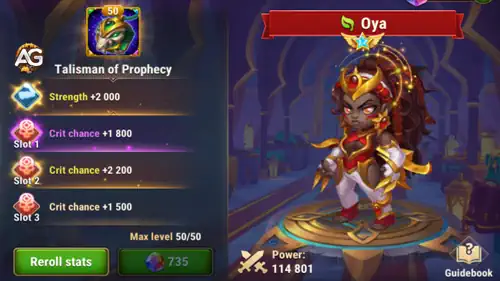
Talismã da Profecia, Hero Wars Alliance.
Slot de Atributo Principal: Força +2.000. Como Força é o atributo principal da Oya, isso concede +80.000 de Vida e +2.000 de Ataque Físico a partir da conversão base. Este talismã é focado em estabilizar a Oya enquanto melhora a consistência de críticos através dos rerolls.
Reroll Slot 1: Chance de Acerto Crítico +2.200. Reroll Slot 2: Chance de Acerto Crítico +2.200. Reroll Slot 3: Chance de Acerto Crítico +2.200. Na prática, trate esses três slots como um único valor: Bônus Total de Reroll = Chance de Acerto Crítico +6.600.
Tabela: Oya - Talismã da Profecia
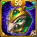
Talismã da Profecia
Total do Atributo Principal
Força +2.000
+80.000 de Vida
+2.000 de Ataque Físico
Slot 1
Slot 2
Slot 3
Bônus Total de Reroll
Chance de Acerto Crítico +2.200
Chance de Acerto Crítico +2.200
Chance de Acerto Crítico +2.200
Chance de Acerto Crítico +6.600
Talismã da Guerreira
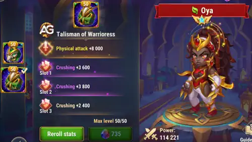
Talismã da Guerreira, Hero Wars Alliance.
Slot de Atributo Principal: Ataque Físico +8.000. Este é um aumento ofensivo direto, sem necessidade de conversão, e aumenta imediatamente o dano das principais habilidades da Oya que escalam com Ataque Físico.
Reroll Slot 1: Crushing +4.400. Reroll Slot 2: Crushing +4.400. Reroll Slot 3: Crushing +4.400. Assim como no primeiro talismã, avalie os rerolls como um único atributo combinado: Bônus Total de Reroll = Crushing +13.200.
Tabela: Oya - Talismã da Guerreira
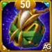
Talismã da Guerreira
Total do Atributo Principal
Ataque Físico +8.000
+8.000 de Ataque Físico
Slot 1
Slot 2
Slot 3
Bônus Total de Reroll
Crushing +4.400
Crushing +4.400
Crushing +4.400
Crushing +13.200
Recomendação de Batalha: Equipe o Talismã da Guerreira na maioria das batalhas. As principais habilidades de dano da Oya estão ligadas ao Ataque Físico: Shieldbreaker (500% de Ataque Físico + 2.400), Hunting (buff de chance de crítico baseado em Ataque Físico) e Overwhelming (25% de Ataque Físico + 9.600). O bônus de +8.000 de Ataque Físico oferece uma escala imediata mais forte para todas elas, e o +13.200 de Crushing melhora a conversão de eliminações em batalhas reais. Use o Talismã da Profecia quando o plano da sua equipe precisar de mais consistência de crítico e sobrevivência em vez de explosão de dano bruto.
Dicas do Alexandre: Se o seu objetivo é pressão em PvP e eliminações mais rápidas, utilize o Talismã da Guerreira. O bônus direto de +8.000 de Ataque Físico combinado com +13.200 de Crushing gera mais dano real nas habilidades principais da Oya e melhora o potencial de finalização. Troque para o Talismã da Profecia apenas quando sua composição precisar de mais Vida e maior consistência de Chance de Acerto Crítico.
Prioridade de Evolução das Skills Lendárias da Oya - Hero Wars Alliance
As relíquias deixam a Oya mais forte com novas funções e melhores escalas, e aqui você vê as fórmulas prontas para entender o impacto real de cada skill.
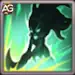
1ª - Quebradora de Escudos
Quebradora de Escudos é a skill mais importante da Oya para dano e para enfrentar inimigos com escudo. Ela acerta o alvo mais próximo, espalha 30% desse dano para inimigos marcados e ainda faz inimigos com escudo receberem 100% mais dano das skills da Oya. Na prática, isso faz a Oya punir exatamente as composições que tentam se proteger demais. A fórmula do dano fica em 584.655 (500% do Ataque Físico 116.451 + 2.400) com o Talismã da Profecia, ou 614.655 (500% do Ataque Físico 122.451 + 2.400) com o Talismã da Guerreira.
Fórmula com Talismã da Profecia
Formula 1:Dano:
584.655 (500% x 116.451 + 2.400)
Formula 2:Dano em Inimigos Marcados:
175.396,5 (30% de 584.655)
Fórmula com Talismã da Guerreira
Formula 1:Dano:
614.655 (500% x 122.451 + 2.400)
Formula 2:Dano em Inimigos Marcados:
184.396,5 (30% de 614.655)
Skill Animation Info
Animation delay: 0.78 seconds
Range: 100
Energia ao eliminar: 700
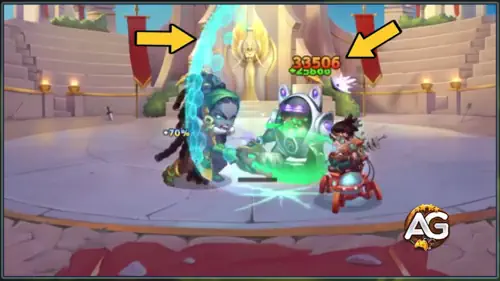
Skill Quebradora de Escudos, Hero Wars Alliance.
Prioridade de Evolução:Muito Alta - Esta é a skill mais importante para evoluir porque entrega o maior ganho real de dano e a maior utilidade anti-escudo da Oya.
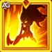
1ª - Quebradora de Escudos (Skill Aprimorada) Relíquia Lendária: Nível 10
Esta melhoria lendária faz a Quebradora de Escudos bater muito melhor contra times defensivos. Agora 75% do dano da skill também atinge todos os inimigos com escudo. Isso aumenta bastante a pressão da Oya contra várias ameaças ao mesmo tempo. O dano extra fica em 438.491,25 (75% de 584.655) com o Talismã da Profecia e 460.991,25 (75% de 614.655) com o Talismã da Guerreira.
Fórmula com Talismã da Profecia
Formula 1:Dano Extra em Inimigos com Escudo:
438.491,25 (75% de 584.655)
Fórmula com Talismã da Guerreira
Formula 1:Dano Extra em Inimigos com Escudo:
460.991,25 (75% de 614.655)
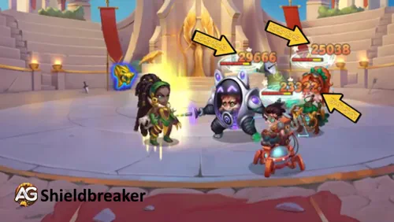
Skill Lendária Quebradora de Escudos, Hero Wars Alliance.
Prioridade de Evolução:Muito Alta - Esta melhoria tem valor enorme porque transforma uma ótima skill anti-escudo em uma ameaça ainda maior para o time inteiro inimigo.
2ª - Caçada
Caçada ajuda a Oya a controlar o ritmo da luta e ainda melhora o desempenho dos aliados. Ela marca o inimigo com menos vida, puxa esse alvo e faz ataques contra ele queimarem energia. Também dá bônus de chance crítica para aliados que se curam ou recebem cura da Oya. A fórmula base fica em 9.333,825 (7,5% do Ataque Físico 116.451 + 600) com o Talismã da Profecia, ou 9.783,825 (7,5% do Ataque Físico 122.451 + 600) com o Talismã da Guerreira. Para heróis da Natureza, isso sobe para 18.667,65 e 19.567,65.
Fórmula com Talismã da Profecia
Formula 1:Bônus de Chance Crítica:
9.333,825 (7,5% x 116.451 + 600)
Formula 2:Bônus de Chance Crítica para Heróis da Natureza:
18.667,65 (15% x 116.451 + 1.200)
Fórmula com Talismã da Guerreira
Formula 1:Bônus de Chance Crítica:
9.783,825 (7,5% x 122.451 + 600)
Formula 2:Bônus de Chance Crítica para Heróis da Natureza:
19.567,65 (15% x 122.451 + 1.200)
Skill Animation Info
Initial Cooldown: 10 seconds
Cooldown: 25 seconds
Keywords: Mark, Control
Animation delay: 0.5 seconds
Duration: 5 seconds
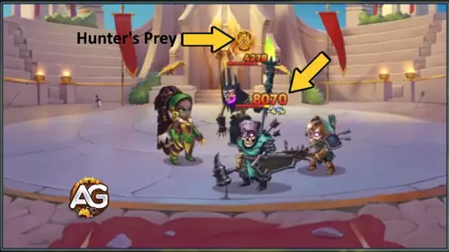
Skill Caçada, Hero Wars Alliance.
Prioridade de Evolução:Alta - Esta skill traz controle útil, pressão de energia e boa sinergia com crítico, então tem valor prático muito forte.
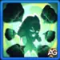
3ª - Avassaladora
Avassaladora é a skill rápida de 3 golpes da Oya. Cada golpe seguinte cresce em dano, e inimigos com escudo atrás do alvo principal também recebem parte disso. Isso ajuda a finalizar alvos e punir linhas protegidas. O aumento por golpe fica em 38.712,75 (25% do Ataque Físico 116.451 + 9.600) com o Talismã da Profecia, ou 40.212,75 (25% do Ataque Físico 122.451 + 9.600) com o Talismã da Guerreira.
Fórmula com Talismã da Profecia
Formula 1:Aumento de Dano a Cada Golpe:
38.712,75 (25% x 116.451 + 9.600)
Formula 2:Dano em Inimigos com Escudo Atrás do Alvo:
19.356,375 (50% de 38.712,75)
Fórmula com Talismã da Guerreira
Formula 1:Aumento de Dano a Cada Golpe:
40.212,75 (25% x 122.451 + 9.600)
Formula 2:Dano em Inimigos com Escudo Atrás do Alvo:
20.106,375 (50% de 40.212,75)
Skill Animation Info
Cooldown: 15 seconds
Animation delay: 0.01 seconds
Range: 120
Hits: 3
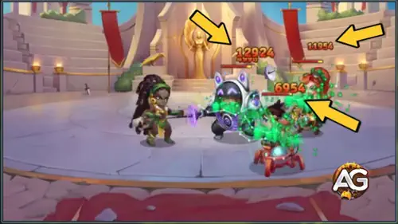
Skill Avassaladora, Hero Wars Alliance.
Prioridade de Evolução:Média Alta - Ela dá bom dano e boa pressão em linhas protegidas, mas ainda fica abaixo das skills que mais mudam o rumo da luta.
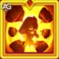
3ª - Avassaladora (Skill Aprimorada) Relíquia Lendária: Nível 20
Essa melhoria lendária adiciona controle indireto muito forte. Cada golpe queima 200 de energia de todos os inimigos com escudo. Como a skill acerta 3 vezes, isso significa 600 de energia total queimada por inimigo com escudo a cada uso.
Skill Animation Info
Hits: 3
Energy Burn per Hit: 200
Total Energy Burn: 600
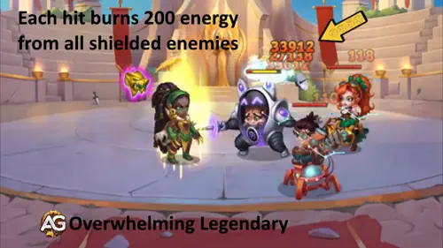
Skill Lendária Avassaladora, Hero Wars Alliance.
Prioridade de Evolução:Alta - Queimar energia de todos os inimigos com escudo é muito útil porque atrasa ultimates inimigas e melhora o controle da Oya.
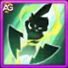
4ª - Investida Brutal
Investida Brutal é a skill de sustain da Oya. Quando um aliado causa dano crítico ou quebra um escudo inimigo, esse aliado recupera vida. Para quem está começando, pense assim: quanto mais crítico e mais quebra de escudo o time causar, mais cura o time ganha. A fórmula de cura fica em 38.323,075 (2,5% da Vida 1.508.923 + 600) com o Talismã da Profecia, ou 36.323,075 (2,5% da Vida 1.428.923 + 600) com o Talismã da Guerreira. Para heróis da Natureza, isso sobe para 76.646,15 e 72.646,15.
Fórmula com Talismã da Profecia
Formula 1:Regeneração de Vida:
38.323,075 (2,5% x 1.508.923 + 600)
Formula 2:Regeneração de Vida para Heróis da Natureza:
76.646,15 (5% x 1.508.923 + 1.200)
Fórmula com Talismã da Guerreira
Formula 1:Regeneração de Vida:
36.323,075 (2,5% x 1.428.923 + 600)
Formula 2:Regeneração de Vida para Heróis da Natureza:
72.646,15 (5% x 1.428.923 + 1.200)
Skill Animation Info
Trigger: Quando um herói aliado causa dano crítico ou quebra um escudo inimigo
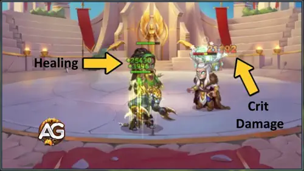
Skill Investida Brutal, Hero Wars Alliance.
Prioridade de Evolução:Média - Essa cura ajuda bastante, mas ainda tem impacto menos decisivo do que as skills que aumentam dano e controle diretamente.
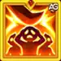
5ª - Mordida Predadora (Nova Skill) Relíquia Lendária: Nível 1
Mordida Predadora é uma nova skill lendária que ativa a cada 10 segundos e adiciona pressão anti-escudo constante. Ela causa dano igual a 100% do Ataque Físico da Oya no inimigo mais próximo e também causa 50% do Ataque Físico da Oya em todos os inimigos com escudo. Com o Talisma da Profecia, isso significa 116,451 de dano no alvo principal e 58,225.5 em cada inimigo com escudo. Com o Talisma da Guerreira, isso sobe para 122,451 e 61,225.5.
Fórmula com Talismã da Profecia
Fórmula 1:Dano no Alvo Principal:
116,451 (100% x 116,451)
Fórmula 2:Dano em Cada Inimigo com Escudo:
58,225.5 (50% x 116,451)
Fórmula com Talismã da Guerreira
Fórmula 1:Dano no Alvo Principal:
122,451 (100% x 122,451)
Fórmula 2:Dano em Cada Inimigo com Escudo:
61,225.5 (50% x 122,451)
Informações da Skill
Intervalo de Ativação: A cada 10.0 segundos
Escalonamento no Alvo Principal: 100% de Ataque Físico
Escalonamento em Inimigos com Escudo: 50% de Ataque Físico
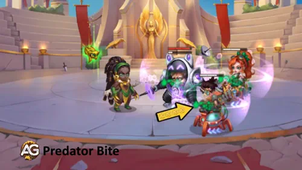
Skill Mordida Predadora, Hero Wars Alliance.
Prioridade de Evolução:Alta - É uma ferramenta forte de pressão porque adiciona dano automático nos alvos preferidos da Oya e fica ainda melhor contra times que geram escudos com frequência.
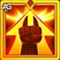
6ª - Fúria da Caçadora (Nova Skill) Relíquia Lendária: Nível 30
Fúria da Caçadora é uma skill lendária passiva que aumenta o dano atual da Oya em 20% por 12.0 segundos sempre que um escudo é aplicado a um inimigo. Se um escudo for aplicado ao time inimigo inteiro, a skill ativa uma vez para cada herói que receber esse escudo, o que torna essa melhoria especialmente perigosa contra composições focadas em barreiras.
Informações de Ativação
Aumento de Dano: 20%
Duração: 12.0 segundos
Gatilho: Cada vez que um escudo é aplicado a um inimigo
Interação com Escudo em Massa: Ativa uma vez para cada herói inimigo que receber escudo
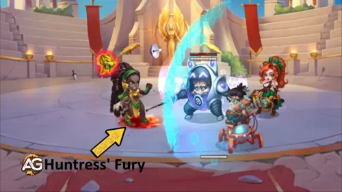
Skill Fúria da Caçadora, Hero Wars Alliance.
Prioridade de Evolução:Muito Alta - Em lutas com muitos escudos, essa skill vira um amplificador repetido de dano, então a Oya escala muito melhor ao longo da batalha e pune ciclos defensivos com grande eficiência.
Melhor Skin para Oya Hero Wars Alliance (Prioridade Atualizada)
Descubra as melhores skins para evoluir na Oya em Hero Wars Alliance com base em como melhoram seu desempenho em batalha e no impacto nas habilidades, incluindo a nova Skin Estelar.
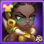
Skin Padrão
Força +1.365. Cada ponto de Força fornece 40 de Vida e +1 de Ataque Físico se Força for o atributo principal. Como as três primeiras habilidades da Oya escalam com Ataque Físico e a quarta escala com Vida, esta skin beneficia todas as suas habilidades, sendo a mais importante.
Prioridade de Evolução:Muito Alta – Atributo central que maximiza dano e sobrevivência. Sempre evolua primeiro.
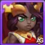
Skin Mítica
+7.095 de Ataque Físico. A principal skin ofensiva da Oya: aumenta o dano de Quebradora de Escudos, Caçada e Avassaladora. Como essas habilidades escalam diretamente com Ataque Físico, esta skin tem ótima sinergia com o kit dela.
Prioridade de Evolução:Alta – Melhor escolha ofensiva após Força/Penetração, especialmente para maximizar burst e DPS sustentado.
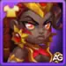
Skin Solar+
Vida +213.290. Aumenta a sobrevivência da Oya e melhora diretamente sua quarta habilidade, Investida Brutal, que cura com base na Vida máxima. Também potencializa sinergia com Guus, melhorando sustain em equipes focadas em crítico.
Prioridade de Evolução:Alta – Essencial para equilíbrio entre durabilidade e suporte de cura. Excelente em lutas longas ou defesas PvP.
Skin de Inverno
Armadura +10.650. Oferece resistência contra dano físico, útil contra atiradores e guerreiros. Não melhora diretamente o escalonamento de habilidades da Oya.
Prioridade de Evolução:Baixa – Defensiva e situacional. Considere somente se enfrentar composições com muito dano físico.
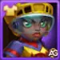
Skin Esportiva
Destruição +5.920. Destruição aumenta todo o dano causado a inimigos com pouca vida, aplicando-se a dano Físico, Mágico e Puro. Esta skin torna a Oya muito mais letal como finalizadora, garantindo abates em oponentes enfraquecidos.
Prioridade de Evolução:Média – Ótima para pressão no final da luta, mas menos impactante no escalonamento base das habilidades comparada a Força, Ataque Físico ou Vida.
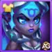
Skin Estelar (Novo)
Penetração de Armadura +10.650. ESTATÍSTICA CRUCIAL. Penetração é obrigatória para heróis de Ataque Físico para ignorar a Armadura inimiga, aumentando significativamente o dano efetivo de todas as suas habilidades ofensivas.
Prioridade de Evolução:Alta – Skin ofensiva essencial. Deve ser priorizada imediatamente após Força para garantir maior eficácia contra alvos com Armadura.
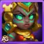
Skin Tribal (Nova)
Ataque Físico +7.095. ESTATÍSTICA CRUCIAL. Esta skin é agora um dos upgrades mais importantes da Oya, pois aumenta diretamente o dano de suas habilidades principais: Quebradora de Escudos, Caçada e Avassaladora. Empilhar Ataque Físico com a Skin Mítica maximiza seu potencial ofensivo, especialmente para burst e DPS sustentado.
Prioridade de Evolução:Alta – Priorize esta skin logo após Força e Penetração (Skin Estelar). Essencial para maximizar o dano da Oya tanto em PvP quanto em PvE.
Prioridade de Evolução dos Artefatos da Oya – Hero Wars Alliance
Descubra quais artefatos priorizar para a Oya em Hero Wars Alliance para potencializar sua habilidade Quebradora de Escudos e a sinergia com a equipe nas batalhas.
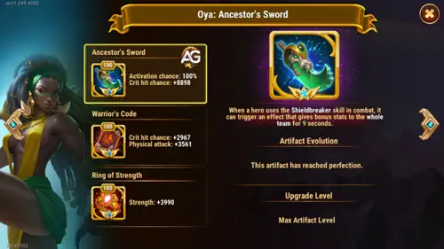
Artefatos da Oya, Hero Wars Alliance.
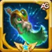
1º – Artefato de Arma: Espada dos Ancestrais
Chance de Acerto Crítico +8.898. Esta arma é ativada sempre que Oya usa sua habilidade suprema, Quebradora de Escudos, que é sua habilidade mais importante. O artefato concede bônus de crítico para toda a equipe por 9 segundos, sendo extremamente valioso tanto no ataque quanto na sinergia em grupo.
Prioridade de Evolução:Muito Alta – Ativa com sua principal habilidade e beneficia toda a equipe. Essencial para o desempenho dela nas batalhas.
2º – Artefato de Livro: Código do Guerreiro
Chance de Acerto Crítico +2.967, Ataque Físico +3.561. Este artefato aumenta o potencial de dano da Oya e a chance de ativar cura e efeitos bônus com acertos críticos. É um reforço sólido para suas capacidades ofensivas, especialmente quando combinada com Guus ou outros aliados da Natureza.
Prioridade de Evolução:Alta – Suporta builds baseadas em crítico e aumenta o dano total, complementando bem a sinergia das habilidades dela.
3º – Artefato de Anel: Anel de Força
Força +3.990. Cada ponto de Força concede à Oya +40 de Vida e +1 de Ataque Físico. Embora este artefato aumente tanto a sobrevivência quanto o poder, seu impacto é mais lento e menos direto do que sua arma ou livro — especialmente em lutas PvP curtas, onde explosões rápidas são mais importantes que atributos de longo prazo.
Prioridade de Evolução:Média-Alta – Importante para o crescimento geral, mas com prioridade menor em relação à arma e ao livro, que impactam o combate de forma mais imediata.
Prioridade de Evolução dos Glifos da Oya
Descubra quais glifos você deve evoluir primeiro para a Oya em Hero Wars Alliance para maximizar seu poder de quebrar escudos e sua sinergia com heróis da Natureza.
1º – Glifo de Ataque Físico
+8.340 de Ataque Físico. Todas as habilidades ofensivas da Oya escalam com Ataque Físico — desde seu ataque triplo até sua ultimate. Aumentar esse atributo melhora todo o seu dano e ajuda a eliminar inimigos com escudo mais rapidamente.
Prioridade de Evolução:Muito Alta – Impulsiona diretamente todas as habilidades de dano. Essencial para o papel da Oya como heroína de dano na linha de frente.
2º – Glifo de Vida
+122.800 de Vida. A Oya luta na linha de frente, o que significa que recebe muito dano. Mais vida significa maior sobrevivência e melhor sinergia com efeitos de cura de habilidades como Brutal Onslaught e aliados como Guus.
Prioridade de Evolução:Alta – Ajuda a mantê-la viva tempo suficiente para continuar causando dano e aplicando efeitos de quebra de escudo.
3º – Glifo de Chance de Crítico
+4.170 de Chance de Acerto Crítico. Acertos críticos são importantes para ativar a cura de Brutal Onslaught e maximizar o dano. Isso se torna ainda mais poderoso quando Oya está em uma equipe com Guus ou outros aliados focados em crítico.
Prioridade de Evolução:Média-Alta – Ótimo para sinergia e ativações de cura, mas menos importante que Ataque Físico puro.
4º – Glifo de Defesa Mágica
+12.850 de Defesa Mágica. Embora este glifo não aumente o poder ofensivo da Oya, ele a ajuda a sobreviver mais contra equipes focadas em dano mágico. Útil no PvP contra magos, mas não é prioridade na maioria das composições.
Prioridade de Evolução:Média – Boa defesa, porém não urgente, a menos que você enfrente magos com frequência.
5º – Glifo de Força
+2.110 de Força. Cada ponto de Força concede +40 de Vida e +1 de Ataque Físico. Embora ajude tanto na sobrevivência quanto no dano, oferece menos benefício por nível em comparação aos glifos diretos de Vida e Ataque Físico.
Prioridade de Evolução:Baixa – Fornece atributos mistos, mas deve ser evoluído por último para máxima eficiência.
Yasmine é uma personagem com alta chance de causar dano crítico. Sempre que um aliado da Oya causa dano crítico, ele recebe cura e um bônus temporário de acerto crítico devido aos efeitos passivos da Oya.
Chabba é um tanque resistente que pode devorar e desativar inimigos na linha de frente. Isso cria espaço para Oya atacar sem ser incomodada, além de reduzir a pressão recebida. Seu controle de grupo e resistência permitem que Oya permaneça ativa por mais tempo e quebre escudos inimigos com consistência.
Elmir se move para a retaguarda após se clonar, causando dano à distância de forma segura. Seu artefato de arma aumenta a penetração de armadura da Oya. Em equipes com Dorian, ele ganha bônus de dano crítico, criando uma sinergia perfeita com a cura baseada em crítico da Oya.
Guus aumenta a chance de acerto crítico e cura aliados com as Penas Douradas. Oya se beneficia imensamente desses bônus, ativando mais acertos críticos e efeitos de cura com Investida Brutal. Uma das melhores sinergias para composições focadas em críticos constantes.
Jhu causa mais dano quanto menor for sua Vida. Os efeitos da Oya de quebrar escudo e drenar energia ajudam a enfraquecer os alvos, permitindo que Jhu finalize os inimigos mais rapidamente. Ambos se beneficiam de formações centradas em acerto crítico.
Ishmael se destaca em equipes com foco em acerto crítico. O bônus passivo de Oya para chance crítica complementa seu estilo de jogo explosivo. Em batalhas mais longas, a escalada crítica combinada dos dois pode dominar as linhas de frente inimigas.
Oya é muito forte contra inimigos com baixa quantidade de vida e normalmente são heróis de causam alto dano como Keira, Artemis, Xe'sha, Ginger, etc. O dano causado por Oya nesses inimigos é ainda maior quando estão protegidos com o escudo de Fafnir.
Uma vez por batalha, Astaroth pode ressuscitar um aliado e quando Oya usa sua habilidade Caça ela elimina os inimigos rapidamente, e Astaroth os revive com energia cheia.
Iris é imune a penalização, mas não a Marca, e se um aliado receber uma penalização ou marca Iris reduz os ataques físico e magico do inimigo que aplicou, além de queimá-los e causar dano. Porém, para usar Iris contra Oya precisa ter outro aliado com menos vida no time ou Astaroth para ressuscitá-la.
Oya recebe 700 de energia extra quando elimina um inimigo, assim Satori aplica suas marcas, porém Satori tem pouca vida e pode ser o alvo com menos vida, dessa forma é bom ter outro aliado com menos vida ou Astaroth para ressuscitá-lo com energia cheia e contra-atacar.
Melhores Times para Oya – Hero Wars: Alliance
Melhores Times com Oya
#
Tabela: Melhores Equipes com Oya
Oya, Leonel, Yasmine, Guus, Fafnir
Astaroth, Oya, Leonel, Guus, Fafnir
Astaroth, Oya, Yasmine, Guus, Sebastian
Chabba, Oya, Yasmine, Thea, Guus
Galahad, Oya, Jhu, Guus, Artemis
Machadinha, Tristan, Oya, Dante, Helios
Corvus, Oya, Morrigan, Kayla, Guus
Conclusão – Guia da Oya Hero Wars Alliance
Oya é uma heroína de linha de frente poderosa e versátil, capaz de fazer uma enorme diferença nas batalhas graças à sua habilidade de ignorar escudos e aumentar o potencial de acertos críticos dos aliados. Ela se destaca em composições físicas e focadas em crítico, especialmente quando combinada com heróis como Guus, Yasmine, Ishmael e Jhu.
Sua sinergia com heróis de suporte que aumentam o dano crítico e a cura, como Guus e Aidan, a torna uma excelente escolha tanto para estratégias ofensivas quanto defensivas. A escolha correta de Talismãs, Glifos, Aparências e Artefatos pode impactar significativamente sua eficácia — por isso, investir com sabedoria é essencial.
Seja no ataque ou na defesa, Oya exerce forte pressão contra tanques com escudo e inimigos que dependem de energia. Quando usada com os aliados certos, ela se torna peça central nas formações vencedoras.
Agora é sua vez — domine o campo de batalha com a Oya!
Você gostou do nosso Guia da Oya para Hero Wars Mobile? Há algo que não entendeu ou gostaria de sugerir mudanças? Convidamos você a se juntar à nossa sessão de comentários na página do Alexandre Games Blog. Não hesite em expressar sua opinião, clarificar suas dúvidas e compartilhar sua sugestões. Clique no botão abaixo para começar:

 Inteligência
Inteligência
 Agilidade
Agilidade
 Força
Força
 Vida
Vida
 Ataque Físico
Ataque Físico
 Ataque Mágico
Ataque Mágico
 Armadura
Armadura
 Defesa Mágica
Defesa Mágica
 Robustez
Robustez
 Penetração de Armadura
Penetração de Armadura
 Chance de Acerto Crítico
Chance de Acerto Crítico
 Crushing
Crushing